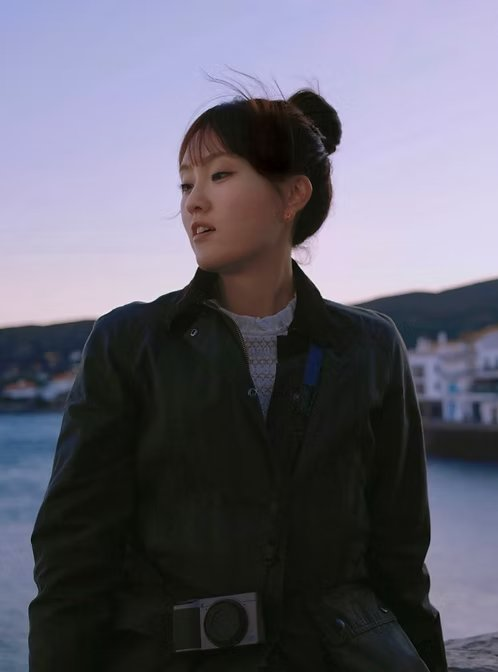

Different rooms,
one story.



I'm an avid museum-goer, and every gallery reminds me of the same thing: objects that seem to have nothing in common begin to tell one story once a curator places them in the same room.
My career looks like one of those rooms. Hotel sales in New York. Partner growth at Expedia. Customer success in enterprise software across Asia-Pacific. On paper, unrelated pieces.
Yet each taught me the same thing from a different angle. Hospitality taught me to read people. Technology taught me to read data and the systems it moves through. Working beside customers showed me how every product decision eventually lands in someone's day.
That is what drew me to design: the chance to shape those moments before they become problems. I bring my experiences together the way a curator would, so that people, their needs and the systems around them add up to one clear, thoughtful experience.
“Let your skills make a living, but let your passions build a life.”